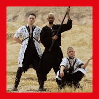

Hatari are an Icelandic techno, industrial and punk rock band and performance art group from Reykjavík. Their public image incorporates elements of anti-capitalism and BDSM-inspired attire. The band consists of Klemens Hannigan, Matthías Haraldsson and Einar Stefánsson, and has released one album and one extended play, encompassing several singles. Hatari represented Iceland in the Eurovision Song Contest 2019 with their song "Hatrið mun sigra", finishing 10th in the final. Hatari's first album, Neyslutrans, was released on 17 January 2020, also featuring all four prior singles. Hatari plan to tour Europe throughout 2020 on the "Europe Will Crumble" tour, with Cyber as their supporting act.
Bashar Murad
Bashar Murad is a Palestinian singer, songwriter, and social activist based in East Jerusalem. His music addresses societal norms, the Israeli Occupation, and LGBT+ rights in the Middle East. He is most commonly known for his collaboration with Icelandic Techno-Punk band Hatari on the song Klefi / Samed (صامد), which was shortly released after Hatari raised the Palestinian flag at the grand finale of Eurovision 2019 in Tel Aviv, Israel.In BSP 2020 they present the song 'Klefi / Samed' submitted by Kostia.